Antilock Brakes / Traction Control Systems: Testing and Inspection
Failure Diagnosis
1. In principle, ESC and TCS controls are prohibited in case of ABS failure.
2. When ESC or TCS fails, only the failed system control is prohibited.
3. The solenoid valve relay should be turned off in case of ESC failure, refer to the ABS fail-safe.
4. Information on ABS fail-safe is identical to the fail-safe in systems where ESC is not installed.
Memory of Fail Code
1. It keeps the code as far as the backup lamp power is connected. (O)
2. It keeps the code as far as the HCU power is on. (X)
Failure Checkup
1. Initial checkup is performed immediately after the HECU power on.
2. Valve relay checkup is performed immediately after the IG2 ON.
3. It executes the checkup all the time while the IG2 power is on.
4. Initial checkup is made in the following cases.
(1) When the failure is not detected now
(2) When ABS and ESC are not in control.
(3) Initial checkup is not made after ECU power on.
(4) If the vehicle speed is over 5 mph(8 km/h) when the brake lamp switch is off.
(5) When the vehicle speed is over 24.8 mph(40 km/h).
5. Though, it keeps on checkup even if the brake lamp switch is on.
6. When performing ABS or ESC control before the initial checkup, stop the initial checkup and wait for the HECU power input again.
7. Judge failure in the following cases.
(1) When the power is normal.
(2) From the point in which the vehicle speed reaches 4.9 mph(8 km/h) after HECU power on.
Countermeasures in Fail
1. Turn the system down and perform the following actions and wait for HECU power OFF.
2. Turn the valve relay off.
3. Stop the control during the operation and do not execute any until the normal condition recovers.
Warning Lamp ON
1. ESC warning lamp turn on for 3sec after IGN ON.
2. ESC function lamp blinks when ESC Act.
3. If ESC fail occurred, ESC warning lamp turns ON.
4. ESC OFF lamp turn on in case of
A. ESC Switch OFF
B. 3sec after IGN ON
Standard Flow of Diagnostic Troubleshooting
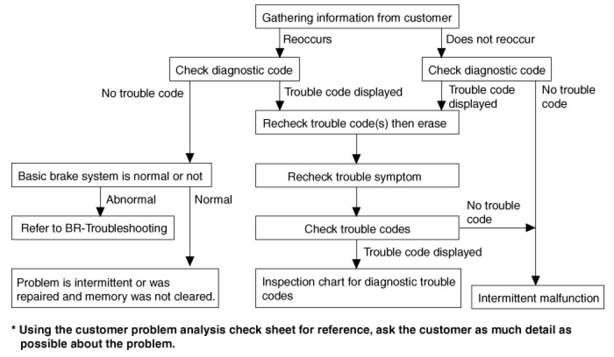
Notes With Regard To Diagnosis
The phenomena listed in the following table are not abnormal.
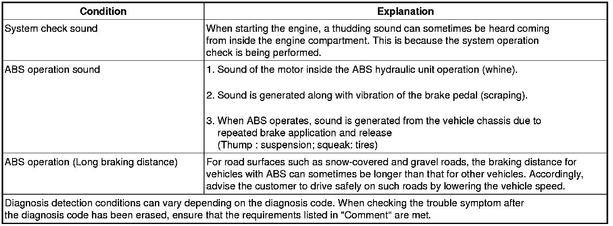
ABS Check Sheet
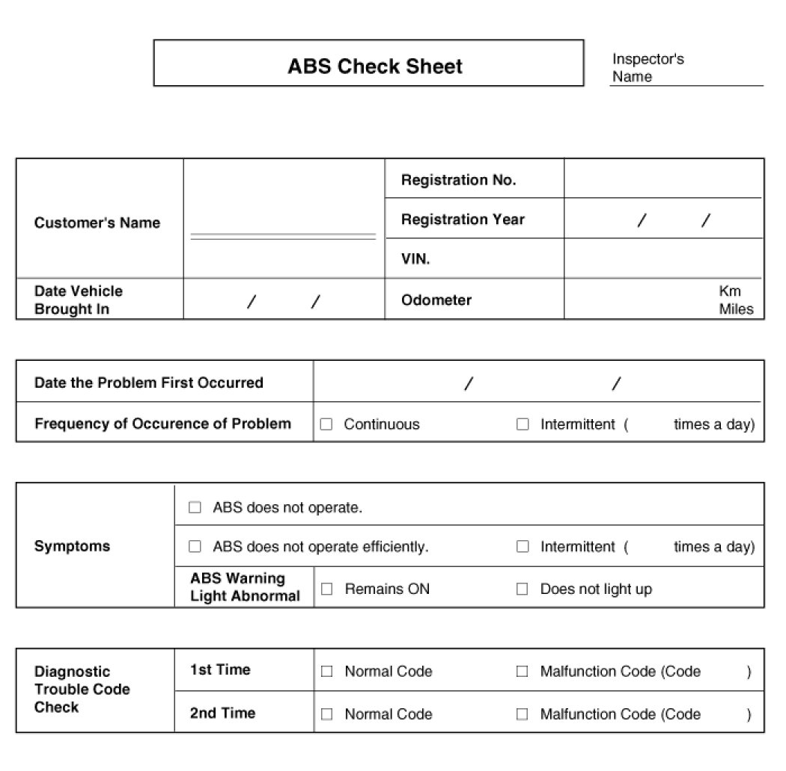
Problem Symptoms Table
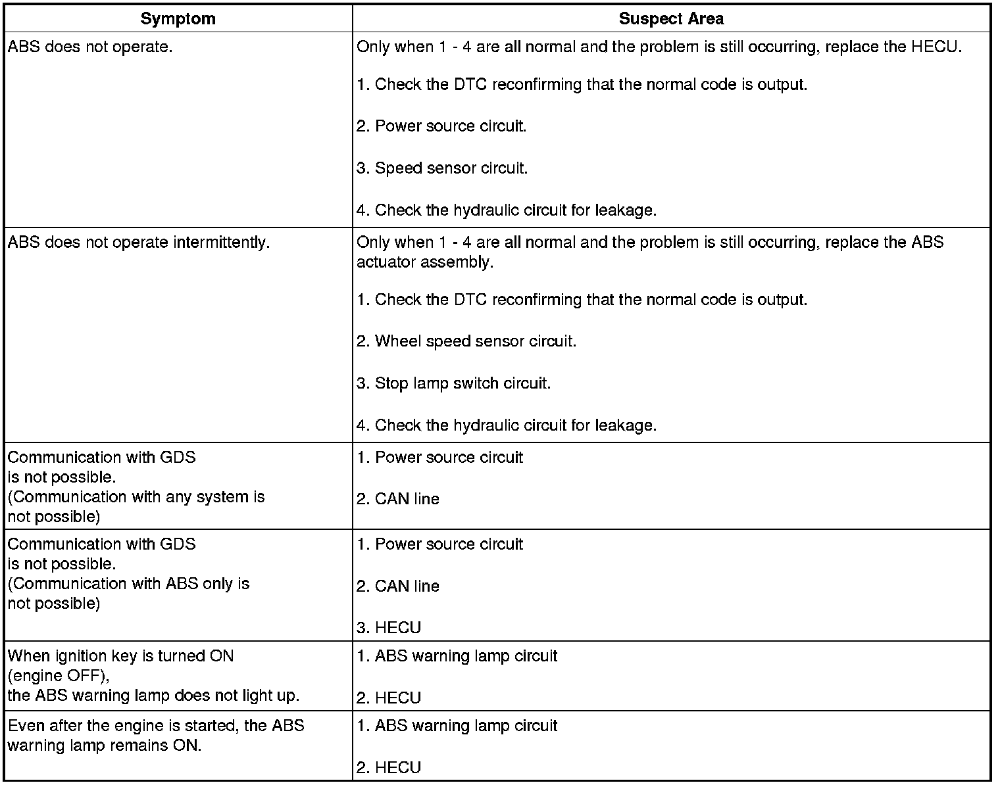
CAUTION:
During ABS operation, the brake pedal may vibrate or may not be able to be depressed. Such phenomena are due to intermittent changes in hydraulic pressure inside the brake line to prevent the wheels from locking and is not an abnormality.
Detecting condition

Inspection procedures
DTC Inspection
1. Connect the GDS with the data link connector and turn the ignition switch ON.
2. Verify that the normal code is output.
3. Is the normal code output?
Check the power source circuit
1. Disconnect the connector from the ABS control module.
2. Turn the ignition switch ON, measure the voltage between terminal 29 of the ABS control module harness side connector and body ground.
Specification:approximately B+
3. Is the voltage within specification?
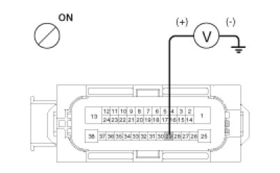
Check the ground circuit
1. Disconnect the connector from the ABS control module.
2. Check for continuity between terminals 13, 38 of the ABS control module harness side connector and ground point.
3. Is there continuity?
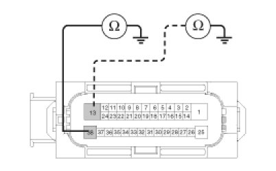
Check the wheel speed sensor circuit
1. Refer to the DTC troubleshooting procedures.
2. Is it normal?
Check the hydraulic circuit for leakage
1. Refer to the hydraulic lines.
2. Inspect leakage of the hydraulic lines.
3. Is it normal?
Detecting condition
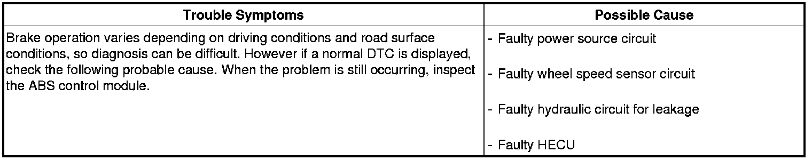
Inspection procedures
DTC Inspection
1. Connect the GDS with the data link connector and turn the ignition switch ON.
2. Verify that the normal code is output.
3. Is the normal code output?
Check the wheel speed sensor circuit
1. Refer to the DTC troubleshooting procedures.
2. Is it normal?
Check the stop lamp switch circuit
1. Check that stop lamp lights up when brake pedal is depressed and turns off when brake pedal is released.
2. Measure the voltage between terminal 23 of the ABS control module harness side connector and body ground when brake pedal is depressed.
Specification :approximately B+
3. Is the voltage within specification?
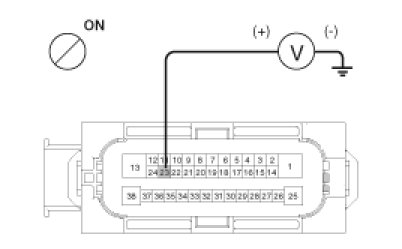
Check the hydraulic circuit for leakage
1. Refer to the hydraulic lines.
2. Inspection leakage of the hydraulic lines.
3. Is it normal?

Detecting condition
Inspection procedures
Check The Power Supply Circuit For The Diagnosis
1. Measure the voltage between terminal 16 of the data link connector and body ground.
Specification :approximately B+
2. Is voltage within specification?
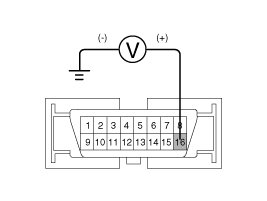
Check the ground circuit for the diagnosis
1. Check for continuity between terminal 4 of the data link connector and body ground.
2. Is there continuity?
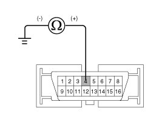
Detecting condition
Inspection procedures
Check for Continuity in the CAN Line
1. Disconnect the connector from the ABS control module.
2. Check for continuity between terminals 26, 14 of the ABS control module connector and 3, 11 of the data link connector.
3. Is there continuity?
Check the power source of ABS control module
1. Disconnect the connector from the ABS control module.
2. Turn the ignition switch ON, measure the voltage between terminal 29 of the ABS control module harness side connector and body ground.
Specification :approximately B+
3. Is voltage within specification?
Check for poor ground
1. Check for continuity between terminal 4 of the data link connector and ground point.
Detecting condition
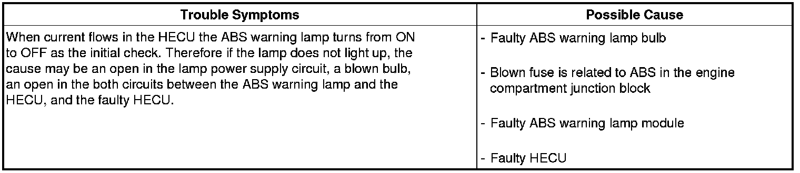
Inspection procedures
Problem verification
1. Disconnect the connector from the ABS control module and turn the ignition switch ON.
2. Does the ABS warning lamp light up?
Check the power source for the ABS warning lamp
1. Disconnect the instrument cluster connector (M08) and turn the ignition switch ON.
2. Measure the voltage between terminal (M08) 29 of the cluster harness side connector and body ground.
Specification :approximately B+
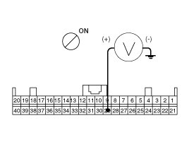
3. Is voltage within specification?
Check the CAN circuit resistance for ABS warning lamp
1. Disconnect the instrument cluster connector (M08) and turn the ignition switch OFF.
2. Measure the resistance between terminal (M08) 31 and 32 of the cluster harness side connector.
Specification :60Ohms
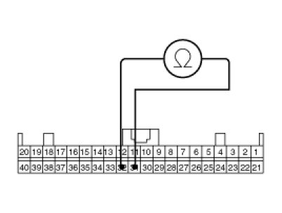
3. Is resistance within specification?
Check the CAN circuit wiring for ABS warning lamp
1. Disconnect the instrument cluster connector (M08) and ABS HECU connector, and then turn the ignition switch OFF.
2. Check for continuity between terminal (M08) 31 of the cluster harness side connector and terminal 26 of ABS HECU harness side.
Check for continuity between terminal (M08) 32 of the cluster harness side connector and terminal 14 of ABS HECU harness side.
Specification:Below 1Ohms
3. Is resistance within specification?
Detecting condition
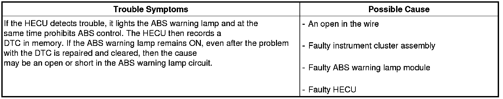
Inspection procedures
Check DTC Output
1. Connect the GDS to the 16P data link connector located behind the driver's side kick panel.
2. Check the DTC output using GDS.
3. Is DTC output?
Check the CAN circuit resistance for ABS warning lamp
1. Disconnect the instrument cluster connector (M08) and turn the ignition switch OFF.
2. Measure the resistance between terminal (M08) 31 and 32 of the cluster harness side connector.
Specification:60Ohms
3. Is resistance within specification?
Check the CAN circuit wiring for ABS warning lamp
1. Disconnect the instrument cluster connector (M08) and ABS HECU connector, and then turn the ignition switch OFF.
2. Check for continuity between terminal (M08) 31 of the cluster harness side connector and terminal 26 of ABS HECU harness side.
Check for continuity between terminal (M08) 32 of the cluster harness side connector and terminal 14 of ABS HECU harness side.
Specification:Below 1Ohms
3. Is resistance within specification?
Bleeding of Brake System
This procedure should be followed to ensure adequate bleeding of air and filling of the ESC unit, brake lines and master cylinder with brake fluid.
1. Remove the reservoir cap and fill the brake reservoir with brake fluid.
CAUTION:
If there is any brake fluid on any painted surface, wash it off immediately.
NOTE:
When pressure bleeding, do not depress the brake pedal.
Recommended fluid. DOT3 or DOT4
2. Connect a clear plastic tube to the wheel cylinder bleeder plug and insert the other end of the tube into a half filled clear plastic bottle.
3. Connect the GDS to the data link connector located underneath the dash panel.
4. Select and operate according to the instructions on the GDS screen.
CAUTION:
You must obey the maximum operating time of the ABS motor with the GDS to prevent the motor pump from burning.
(1) Select vehicle name.
(2) Select Anti-Lock Brake system.
(3) Select HCU air bleeding mode.
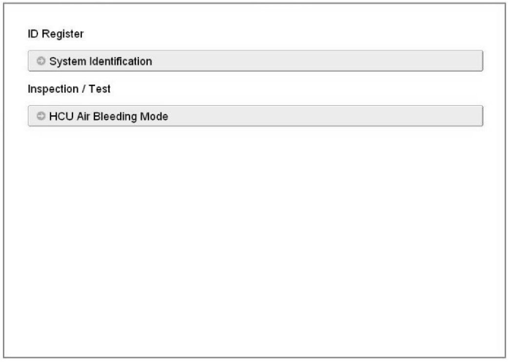
(4) Press "OK" to operate motor pump and solenoid valve.
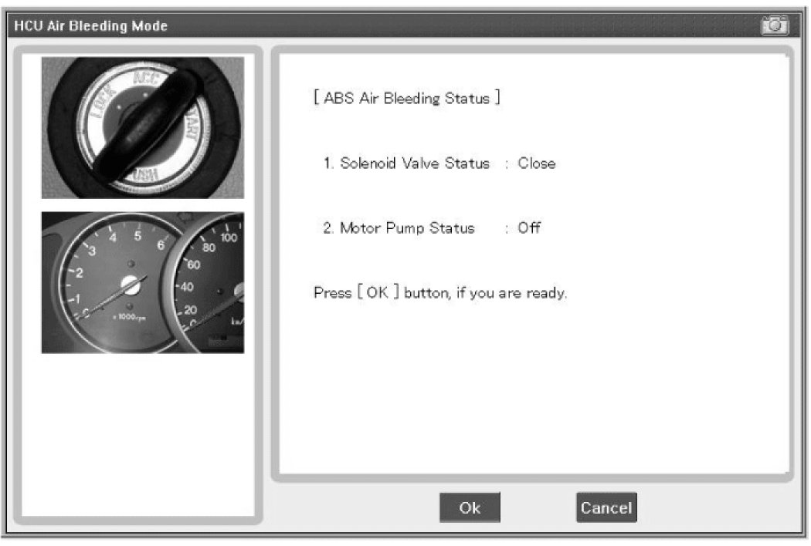
(5) Wait 60 sec. before operating the air bleeding.
(If not, you may damage the motor.)
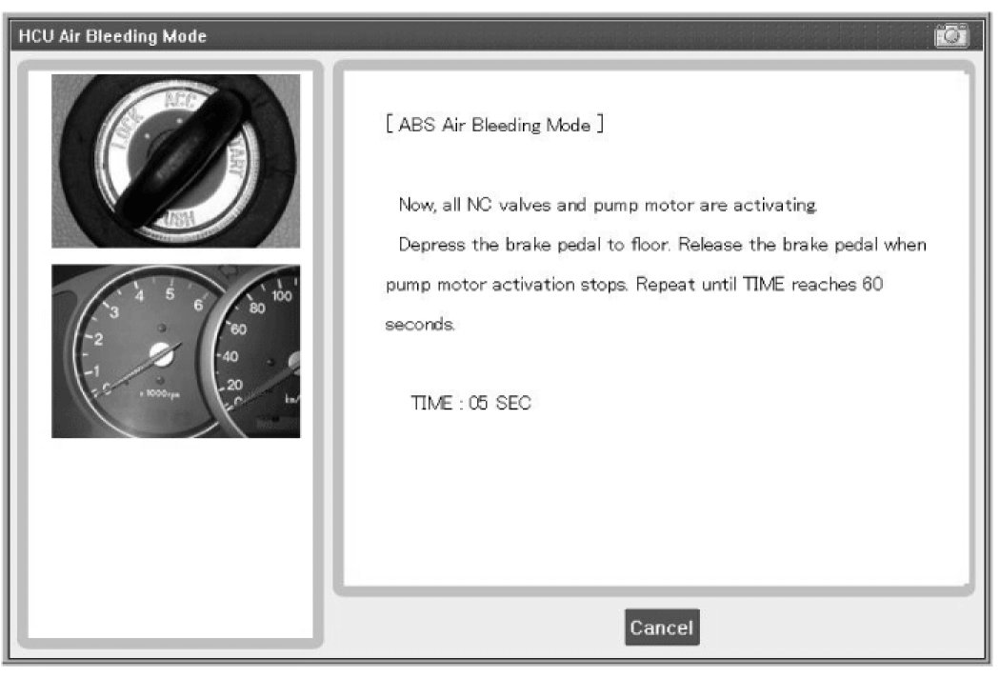
(6) Perform the air bleeding.
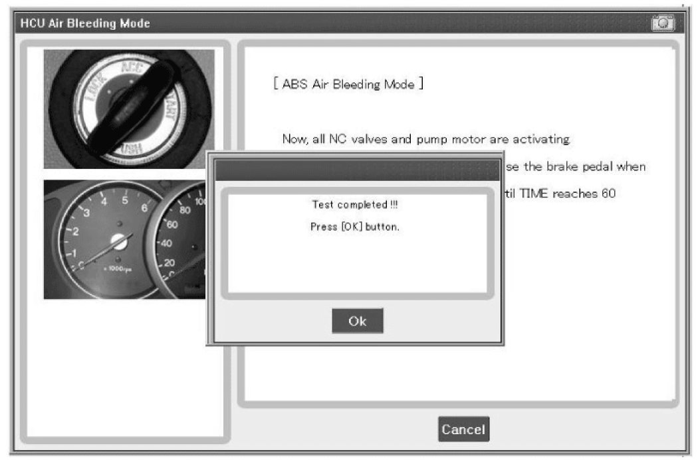
5. Pump the brake pedal several times, and then loosen the bleeder screw until fluid starts to run out without bubbles. Then close the bleeder screw (A).
Front

Rear Disk Brake

Rear Drum Brake

6. Repeat step 5 until there are no more bubbles in the fluid for each wheel using the chart below for the order of bleeding process.
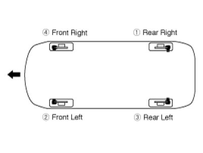
7. Tighten the bleeder screw.
Bleed screw tightening torque:
6.9 - 12.7 N.m (0.7 - 1.3 kgf.m, 5.1 - 9.4 lb-ft)